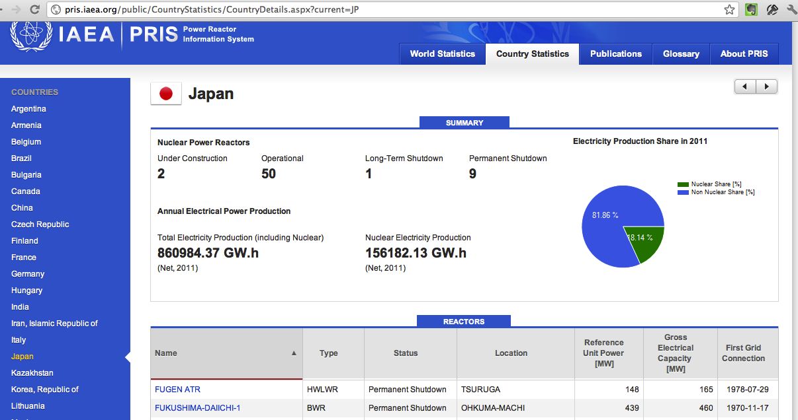

¿Cuál es la verdad?
Este post nace de una preocupación, que surge de una discusión con Matias Asun, director ejecutivo de Greenpeace Chile. En su columna en El Mostrador del día hoy, junto con plantear su posición respecto al debate energético en nuestro país, algo que debe hacer en su rol, desliza una afirmación que me dejó intrigado:
“Actualmente en Japón sólo dos de los 54 reactores están operativos y es posible que incluso dejen de funcionar en el breve plazo.”
Este post no tiene que ver con la conveniencia o no de implementar energía nuclear en Chile, tampoco sobre si estoy o no de acuerdo con Matías sobre este tema. Respeto su trabajo en Greenpeace y creo que es una persona responsable y bien informada, mi problema es con esa afirmación. Algo no me calzaba. Así que investigué un poco, y el resultado fue incertidumbre...
Porque Matías tiene sus fuentes, que se contradicen con lo que plantean algunos organos oficiales. Después de todo Greenpeace es una institución que está en todo el mundo, y el capítulo en Japón habrá informado sobre estas cifras.
Pero, ¿cómo confirmarlas?, porque a mi no me calzan, porque son varios miles de GWh que hay que generar, y si se reemplazan las centrales nucleares por centrales termoeléctricas (la alternativa más rápida), estamos ante las puertas de una crisis ecológica de magnitud, el remedio sale peor que la enfermedad, y no creo que a GP le guste eso tampoco.
¿Cómo confirmar esta información? Si uno parte por Wikipedia, la fuente más común, hay contradicciones en varias páginas. Pero bueno, ¡es wikipedia!, la información no tiene porqué estar actualizada. Así que decidí investigar en una fuente oficial como la Asociación de Energía Atómica Internacional, la IAEA, en su sitio mantienen el PRIS, Power Reactor Information System, un sistema que permite saber el estado de los reactores a lo largo del mundo. Ahí uno puede consultar el estado de Japón al día de hoy, como se ve en este pantallazo que saqué recién:

50 reactores, 9 fuera de servicio y 2 en construcción! Según el sitio PRIS esta información está actualizada al 5 de marzo. Lo malo es que, de acuerdo a este informe de Greenpeace, la IAEA ha fallado en su rol contralor, por diversas razones. Así que esta fuente puede ser cuestionada desde un punto de vista político.
Por otro lado hay reportes de prensa que indican que Japón ha apagado sus reactores, una nota en EMOL originada por la agencia EFE confirma que Japón tiene 2 reactores activos, la gente de Greenpeace puede proporcionar esto como fuente.
Bueno, pero mi punto es que si trato de investigar desde mi escritorio, buscando en internet fuentes para saber qué pasa realmente en Japón con las centrales nucleares, ¡no tengo como obtener un dato certero!. La única fuente “confiable” son las oficiales, quizás explorar los sitios de las empresas que operan centrales nucleares en Japón, etc. Pero eso tomaría mucho tiempo y esfuerzo. O creer lo que dicen las noticias, o Greenpeace.
¿No hay una forma de tener una certeza en este caso? ¿Evidencias, datos duros? Por que hay una verdad objetiva allá en Japón, hay una cantidad X de reactores nucleares operando, y debe haber otra cantidad Y de reactores en construcción. Si X es 50 ó 2, e Y es 2 ó 0 es relevante porque cambia totalmente mi percepción del problema.
Este es un ejemplo, pasa en muchas otras situaciones y discusiones. Desde la política energética nacional hasta la calidad de los servicios de cloud computing. Es muy dificil encontrar información y hechos objetivos, que no despierten algún grado de sospecha. Ahora, yo creo que eso pasa porque estamos en una sociedad que desprecia la verdad, o a la que simplemente no le interesa la verdad. Hoy en día es muy fácil crear una realidad, fabricar una verdad. Y lo aceptamos, nos da lo mismo.
Alguien me dijo: “la verdad es muy peligrosa cuando se usa para justificar tonterías”, es una frase notable, pero tiene el problema de saber cuales son las “tonterías”.
Todo esto me recuerda el texto de Milagros Perez Oliva, defensora del lector de el diario El Pais, quien al despedirse decía entre otras cosas:
“Muchos lectores me han preguntado cómo es posible que ante un mismo hecho puedan aparecer versiones tan antagónicas como las que pueden leerse en los diferentes medios. La facilidad con que los lectores pueden observar ahora esas diferencias ha aumentado su escepticismo respecto de lo que les contamos. ¿Cómo saber quién miente y quién dice la verdad?”
“La sociedad está saturada de información y la prensa trata de adaptarse a los nuevos requerimientos ofreciendo un periodismo más interpretativo. Pero la interpretación no puede ser una coartada para la deformación. Hemos de partir de los hechos para llegar a su interpretación y no al revés. El problema es que hay prácticas periodísticas que prescinden de los hechos o que los distorsionan hasta conseguir que coincidan con la versión que quieren imponer. Su objetivo es distorsionar la realidad, y si es posible, crearla.”
“Desconfíen de quienes anteponen la interpretación a la demostración. El periodismo interpretativo debe basarse en hechos y datos comprobables. Y desconfíen también de aquellos textos que no hacen un esfuerzo suficiente para demostrarles cómo han llegado a la versión que sostienen.”
Y eso que critica Milagros Perez Oliva del periodismo aplica también para otro, para los grupos de presión, para los incumbentes, los partidos políticos, movimientos sociales, el gobierno, etc. Saturados de información nos convertimos en un pueblo que decide a partir de las emociones, y no de la interpretación de los hechos.
Creo que estamos al borde de una paradoja, la sociedad de la información está dirigiéndose a una nueva era de oscurantismo, porque estamos creando conciencias escépticas por un lado, y conciencias acríticas por otro. Nadie va a confiar en nadie ni en nada de este modo, y el diálogo y el bien común no se ven posibles en este escenario, terminaremos asistiendo a nuevas hogueras donde quemaremos a los que predican la razón o la ciencia como brujos, o simplemente porque no están de acuerdo con nuestras ideas.
A mi me preocupan estas cosas, debemos ser más responsables con lo que afirmamos. “Desconfíen de quienes anteponen la interpretación a la demostración”, sino vamos camino a la decadencia. ¿Qué opinan ustedes?